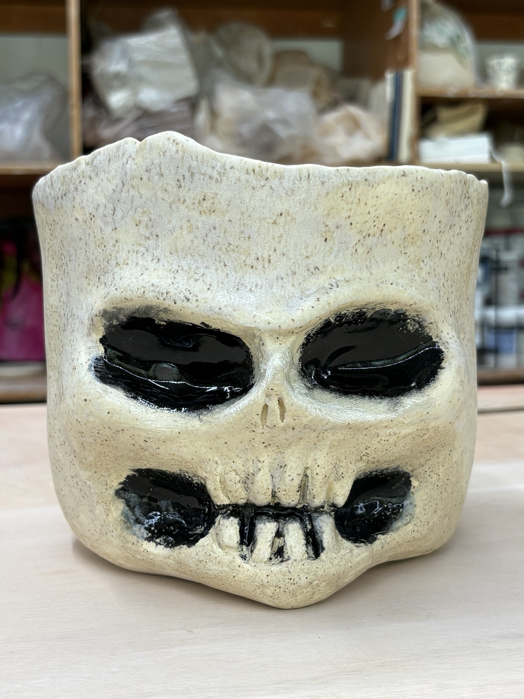
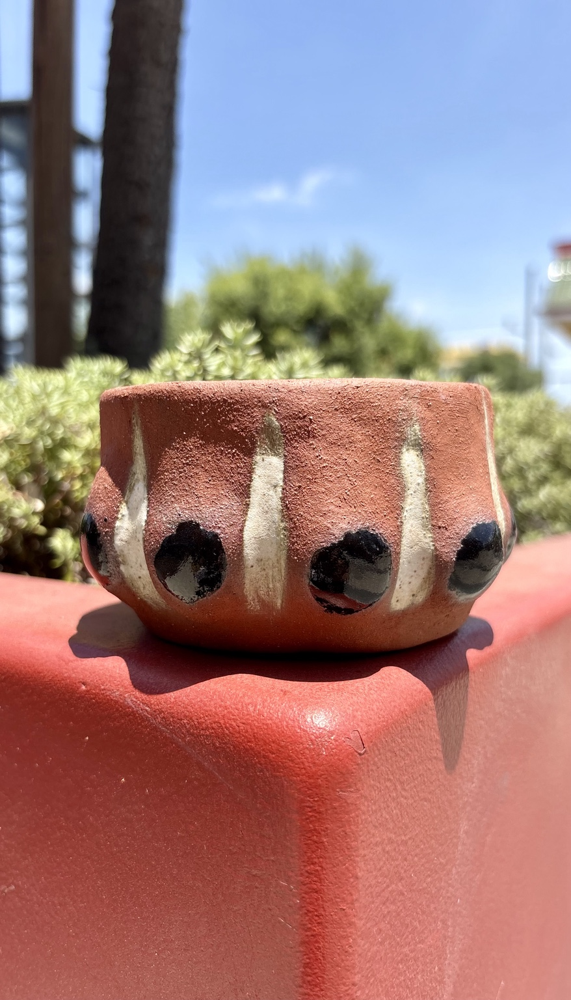
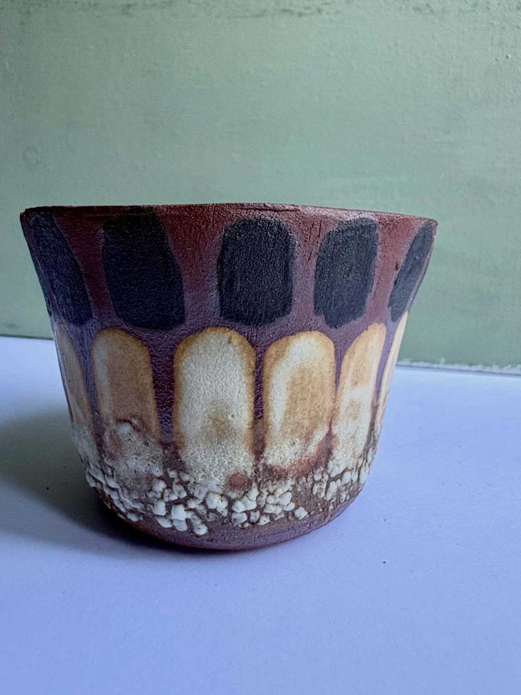
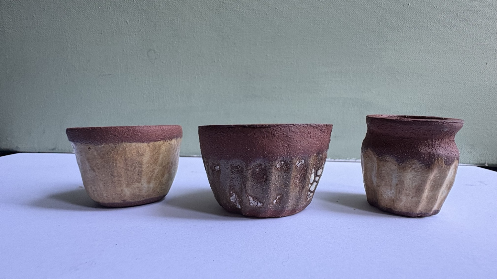
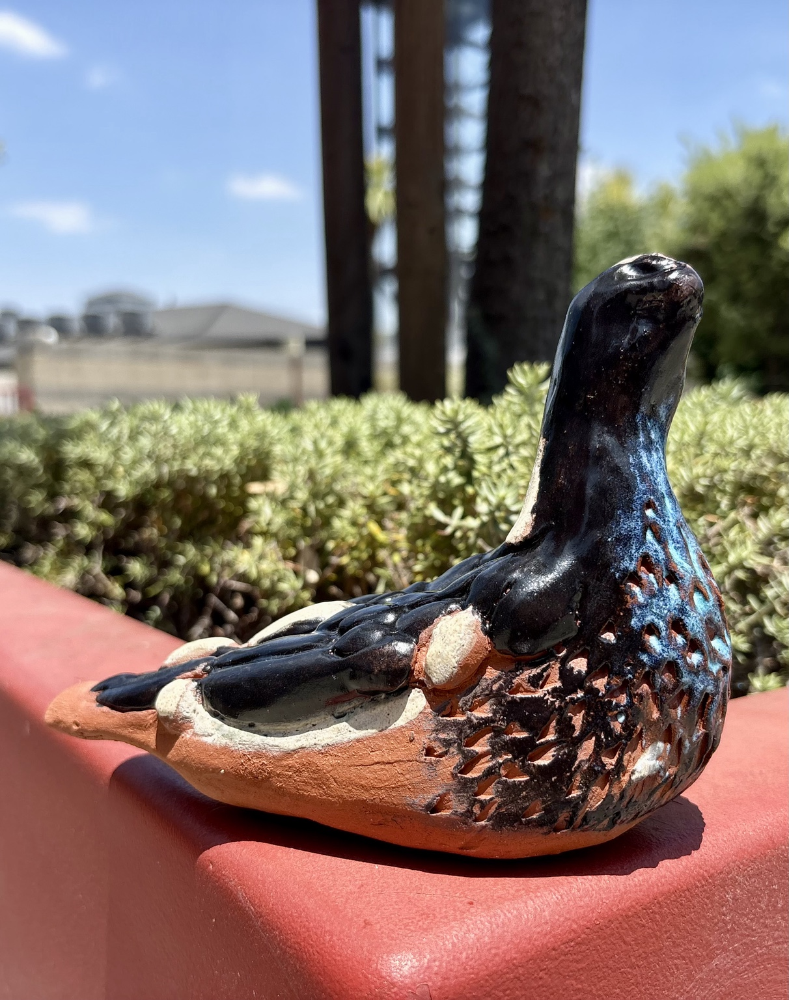
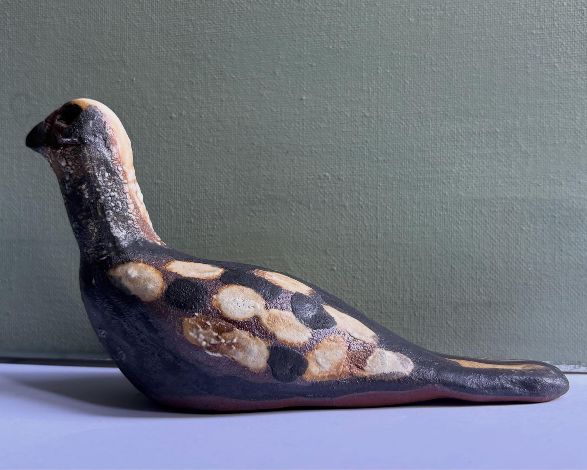

Pequeño taller creativo · Los Ángeles
Arte en tus Manos
Macetas de barro y cemento hechas a mano, una pieza a la vez. Objetos originales que llevan arte y personalidad a tus espacios.
Explorar las piezas ↓Mis creaciones
Cada pieza tiene su propia textura, forma y carácter. Consulta disponibilidad y detalles por mensaje.






Hecho con las manos y el corazón
Soy Tania Ramírez, artista visual. En mi pequeño taller en casa creo piezas artesanales inspiradas en las formas, las texturas y la expresión personal. Cada objeto es una oportunidad para llevar el arte a la vida cotidiana.
¿Te interesa una pieza?
Para consultar disponibilidad, detalles o hacer un pedido, contáctame por mensaje de texto o WhatsApp.
Enviar SMS al (323) 358-3161 Enviar WhatsAppTambién puedes escribir a patriciatanea@gmail.com